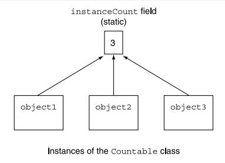

!pip3 install tutormagic
%load_ext tutormagic
import warnings
warnings.filterwarnings("ignore", category=DeprecationWarning)
# Run and print a shell command.
def run(cmd):
print('>> {}'.format(cmd))
!{cmd} # This is magic to run 'cmd' in the shell.
print('')
def compile(nombre_clase):
run('javac {}.java'.format(nombre_clase))
def execute(nombre_clase):
run('java {}'.format(nombre_clase))
def ejecutar(nombre_clase):
compile(nombre_clase)
execute(nombre_clase)
# Check the Java version to see if everything is working well.
run('javac -version')
Metodos y variables estaticas¶
En construcción…
Tal y como se vio en los ejemplos anteriores cada objeto tiene su propia copia de todas las variables de instancia de la clase. Por ejemplo, para la clase Punto, cada objeto tipo Punto que se instanció a partir de esta clase tiene sus propias coordenadas (variables miembro).
Existen casos en los que deben compartirse solamente una copia de cierta variable entre todos los objetos de una clase; en estos campos se utiliza un campo static (conocido tambien como variable de clase). Una variable static representa información en toda la clase (todos los objetos de la clase comparten la misma pieza de datos). La declaración de una variable static comienza con la palabra clave static.
Declaracion…
A continuación se muestra la sintaxis para acceder a variables tipo static
<class-name>.<variable-name>
Ejemplo conceptual tomado del libro de Deitel & Deitel¶
Veamos un ejemplo con datos static. Suponga que tenemos un videojuego con Marcianos y otras criaturas espaciales. Cada Marciano tiende a ser valiente y deseoso de atacar a otras criaturas espaciales cuando sabe que hay al menos otros cuatro Marcianos presentes. Si están presentes menos de cinco Marcianos, cada Marciano se vuelve cobarde. Por lo tanto, cada uno de ellos necesita saber el valor de cuentaMarcianos. Podríamos dotar a la clase Marciano con la variable cuentaMarcianos como variable de instancia. Si hacemos esto, entonces cada Marciano tendrá una copia separada de la variable de instancia, y cada vez que creemos un nuevo Marciano, tendremos que actualizar la variable de instancia cuentaMarcianos en todos los objetos Marciano. Las copias redundantes desperdician espacio y tiempo en actualizar cada una de las copias de la variable, además de ser un proceso propenso a errores. En vez de ello, declaramos a cuentaMarcianos como static, lo cual convierte a cuentaMarcianos en datos disponibles en toda la clase. Cada objeto Marciano puede ver la cuentaMarcianos como si fuera una variable de instancia de la clase Marciano, pero sólo se mantiene una copia de la variable static cuentaMarcianos. Esto nos ahorra espacio. Ahorramos tiempo al hacer que el constructor de Marciano incremente a la variable static cuentaMarcianos; como sólo hay una copia, no tenemos que incrementar cada una de las copias de cuentaMarcianos para cada uno de los objetos Marciano.
Recoleccion de basura y medodo finalice¶
El método finalize() es un método especial que llama el recolector de basura (garbage collector) para realizar las tareas de preparación para la terminación sobre un objeto, justo antes de que el recolector de basura reclame la memoria de ese objeto. Las principales caracteristicas dle metodo finalize() son las siguientes:
No devuelve valor, es de tipo void.
No tiene argumentos.
No puede sobrecargarse.
Su definición es opcional.
Un problema con el método finalize es que no se garantiza que el recolector de basura se ejecute en un tiempo especifi cado. De hecho, tal vez el recolector de basura nunca se ejecute antes de que termine un programa. Por ende, no queda claro si (o cuándo) se hará la llamada al método finalize. Por esta razón, la mayoría de los programadores deben evitar el uso del método finalize.
// Empleado.java
// Variable static que se utiliza para mantener una cuenta del
// número de objetos Empleado en la memoria.
class Empleado {
private String primerNombre;
private String apellidoPaterno;
private static int cuenta = 0; // número de objetos en memoria
// inicializa empleado, suma 1 a la variable static cuenta e
// imprime objeto String que indica que se llamó al constructor
public Empleado( String nombre, String apellido ) {
primerNombre = nombre;
apellidoPaterno = apellido;
cuenta++; // incrementa la variable static cuenta de empleados
System.out.printf( "Constructor de Empleado: %s %s; cuenta = %d\n",
primerNombre, apellidoPaterno, cuenta );
} // fin de constructor de Empleado
// resta 1 a la variable static cuenta cuando el recolector
// de basura llama a finalize para borrar el objeto;
// confirma que se llamó a finalize
protected void finalize() {
cuenta--; // decrementa la variable static cuenta de empleados
System.out.printf( "Finalizador de Empleado: %s %s; cuenta = %d\n",
primerNombre, apellidoPaterno, cuenta );
} // fin del método finalize
// obtiene el primer nombre
public String obtenerPrimerNombre() {
return primerNombre;
} // fin del método obtenerPrimerNombre
// obtiene el apellido paterno
public String obtenerApellidoPaterno() {
return apellidoPaterno;
} // fin del método obtenerApellidoPaterno
// método static para obtener el valor de la variable static cuenta
public static int obtenerCuenta() {
return cuenta;
} // fin del método obtenerCuenta
} // fin de la clase Empleado
// PruebaEmpleado.java
// Demostración de miembros static.
public class PruebaEmpleado {
public static void main( String args[] ) {
// muestra que la cuenta es 0 antes de crear Empleados
System.out.printf( "Empleados antes de instanciar: %d\n",
Empleado.obtenerCuenta() );
// crea dos Empleados; la cuenta debe ser 2
Empleado e1 = new Empleado( "Susan", "Baker" );
Empleado e2 = new Empleado( "Bob", "Blue" );
// muestra que la cuenta es 2 después de crear dos Empleados
System.out.println( "\nEmpleados despues de instanciar: " );
System.out.printf( "mediante e1.obtenerCuenta(): %d\n", e1.obtenerCuenta() );
System.out.printf( "mediante e2.obtenerCuenta(): %d\n", e2.obtenerCuenta() );
System.out.printf( "mediante Empleado.obtenerCuenta(): %d\n",
Empleado.obtenerCuenta() );
// obtiene los nombres de los Empleados
System.out.printf( "\nEmpleado 1: %s %s\nEmpleado 2: %s %s\n\n",
e1.obtenerPrimerNombre(), e1.obtenerApellidoPaterno(),
e2.obtenerPrimerNombre(), e2.obtenerApellidoPaterno() );
// en este ejemplo, sólo hay una referencia a cada Empleado,
// por lo que las siguientes dos instrucciones hacen que la JVM
// marque a cada objeto Empleado para la recolección de basura
e1 = null;
e2 = null;
System.gc(); // pide que la recolección de basura se realice ahora
// muestra la cuenta de Empleados después de llamar al recolector de basura;
// la cuenta a mostrar puede ser 0, 1 o 2 dependiendo de si el recolector de
// basura se ejecuta de inmediato, y del número de objetos Empleado recolectados
System.out.printf( "\nEmpleados despues de System.gc(): %d\n",
Empleado.obtenerCuenta() );
} // fin de main
} // fin de la clase PruebaEmpleado
El codigo anterior se puede ejecutar dando click en el siguiente enlace
Ejemplo¶
El siguiente programa crea 3 instancias de la clase Countable (object1, object2 and object3). Notese que aunque hay 3 instancias de la clase, solo hay un copia del campo static (lamado instanceCount) tal y como se muestra en la siguiente fígura:

El código java asociado se encuentra a continuación (este tambien se puede simular en el siguiente enlace).
%%tutor -l java -k
/**
This class demonstrates a static field.
*/
class Countable
{
private static int instanceCount = 0;
/**
The constructor increments the static
field instanceCount. This keeps track
of the number of instances of this
class that are created.
*/
public Countable()
{
instanceCount++;
}
/**
The getInstanceCount method returns
the number of instances of this class
that have been created.
@return The value in the instanceCount field.
*/
public int getInstanceCount()
{
return instanceCount;
}
}
/**
This program demonstrates the Countable class.
*/
public class StaticDemo
{
public static void main(String[] args)
{
int objectCount;
// Create three instances of the
// Countable class.
Countable object1 = new Countable();
Countable object2 = new Countable();
Countable object3 = new Countable();
// Get the number of instances from
// the class's static field.
objectCount = object1.getInstanceCount();
System.out.println(objectCount +
" instances of the class " +
"were created.");
}
}
Ejemplo¶
Dada una clase se quieren conocer en todo momento los objetos activos en la aplicación. Se declara la clase Ejemplo con un constructor por defecto y otro con un argumento; ambos incrementan la variable static cuenta, en uno; de esa manera cada nuevo objeto queda contabilizado. También se declara el método finalize(), de tal forma que al activarse cuenta disminuye en uno. El método main() crea objetos de la clase Ejemplo y visualiza la variable que contabiliza el número de sus objetos (enlace de compilación online).
%%tutor -l java -k
class Ejemplo {
private int datos;
static int cuenta = 0;
public Ejemplo() {
datos = 0;
cuenta++; // nuevo objeto
}
public Ejemplo(int g) {
datos = g;
cuenta++; // nuevo objeto
}
//
public void finalize() {
System.out.println("Fin de objeto Ejemplo");
cuenta--;
}
}
public class ProbarEjemplo {
public static void main(String[] ar) {
Ejemplo d1, d2;
System.out.println("Objetos Ejemplo: " + Ejemplo.cuenta);
d1 = new Ejemplo();
d2 = new Ejemplo(11);
System.out.println("Objetos Ejemplo: " + Ejemplo.cuenta);
d2 = d1;
System.gc();
System.out.println("Objetos Ejemplo: " + Ejemplo.cuenta);
d2 = d1 = null;
System.gc();
System.out.println("Objetos Ejemplo: " + Ejemplo.cuenta);
}
}
Sobre los métodos estaticos¶
Cuando una clase contiene con un método estatico, no es necesario crear una instancia de la clase para que este pueda ser ejecutado. Esto se muestra en el siguiente código fuente:
%%tutor -l java -k
/**
This class demonstrates static methods.
*/
class Metric
{
/**
The milesToKilometers method converts a
distance in miles to kilometers.
@param m The distance in miles.
@return The distance in kilometers.
*/
public static double milesToKilometers(double m)
{
return m * 1.609;
}
/**
The kilometersToMiles method converts
a distance in kilometers to miles.
@param k The distance in kilometers.
@return The distance in miles.
*/
public static double kilometersToMiles(double k)
{
return k / 1.609;
}
}
/**
This program demonstrates the Metric class.
*/
public class MetricDemo
{
public static void main(String[] args)
{
String input; // To hold input
double miles; // A distance in miles
double kilos; // A distance in kilometers
miles = 1000;
// Convert the distance to kilometers.
kilos = Metric.milesToKilometers(miles);
System.out.printf("%,.2f miles equals %,.2f kilometers.\n",miles, kilos);
kilos = 2500;
// Convert the distance to kilometers.
miles = Metric.kilometersToMiles(kilos);
System.out.printf("%,.2f kilometers equals %,.2f miles.\n",kilos, miles);
System.exit(0);
}
}
El codigo en IDE online repl.it se puede ejecutar en el siguiente enlace.